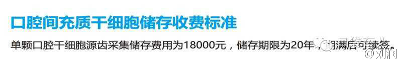

回复@杨中科:央视现在残存的公信力，能捞些钱就捞些吧。//@杨中科:央视有很多栏目都是外包的，比如证券频道、财经频道，然后这些外包公司打着央视的名义去揽客“只要花钱就可以上央视采访”，价格一般20-30万。央视才是最大的骗子！有钱就能上的东西！@Ada李力:央视什么时候学会在微博上行骗了。周末被所谓的访谈嘉宾忽悠过去，结果是听了培训师滔滔不绝讲了2小时，然后就轰大家去做初审缴费。今天私信又来了，换了个名头骗，优秀企业家？！！！
//@杨中科：央视有很多栏目都是外包的，比如证券频道、财经频道，然后这些外包公司打着央视的名义去揽客“只要花钱就可以上央视采访”，价格一般20-30万。央视才是最大的骗子！有钱就能上的东西！@Ada李力:央视什么时候学会在微博上行骗了。周末被所谓的访谈嘉宾忽悠过去，结果是听了培训师滔滔不绝讲了2小时，然后就轰大家去做初审缴费。今天私信又来了，换了个名头骗，优秀企业家？！！！
主要看用谁的钱在买买买。 //@考槃在涧的围脖:可是，如果一个男人不喜欢女人买买买，秀秀秀，美美美，也很可能被骂很惨。女人会说：女人都这样，这是女人的天性，这是女人的快乐。@Ada李力:百度去年的三八节发的题图是女生们在买买买，秀秀秀，美美美，被骂成狗了。今年就有女宇航员，女科学家的形象了。给这个改变点赞。
回复@我家国光萌萌哒:第一个发邀请的是带V的//@我家国光萌萌哒:人家都不带V相信的人脑子估计不太好@Ada李力:央视什么时候学会在微博上行骗了。周末被所谓的访谈嘉宾忽悠过去，结果是听了培训师滔滔不绝讲了2小时，然后就轰大家去做初审缴费。今天私信又来了，换了个名头骗，优秀企业家？！！！
回复@我家国光萌萌哒:我应该投诉微博协助行骗吗？ 评论配图 //@我家国光萌萌哒:回复@Ada李力:第一个认证有写央视的吗@Ada李力:央视什么时候学会在微博上行骗了。周末被所谓的访谈嘉宾忽悠过去，结果是听了培训师滔滔不绝讲了2小时，然后就轰大家去做初审缴费。今天私信又来了，换了个名头骗，优秀企业家？！！！
转发微博@刘润:从传播角度看，违背常识的真相，最具传播效果。可违背常识的真相不够用了，还有那么多公共号需要流量，咋办？管他是不是真相，只要违背常识就好，都发！建议：网上绝大部分违背常识的都不是真相，可一律当谣言。如果实在太像了，看看果壳、知乎怎么说。 网页链接 
玛丽儿保原来就是那个“婴儿暴力锻炼操”视频的操作者？原来有来头。 //@昡鐡重劍:挂之前不知人家老板是甫田系四大家族之一吧，右边---:该账号因被投诉违反法律法规和《微博社区公约》的相关规定，现已无法查看。查看帮助 网页链接
//@姜汝祥部落电商:然也 //@华杉2009:本质不是培训公司，只不过借一个“培训”的名义。性质介于身心灵导师，心理咨询和小教派之间。那是教主，信众多、挣钱多很正常。看人看事，要看本质，要看到他的“原型”，和商业咨询培训一点关系也没有，是以小微企业主为目标信众的身心灵导师教主。---:抱歉，作者已设置仅展示半年内微博，此微博已不可见。